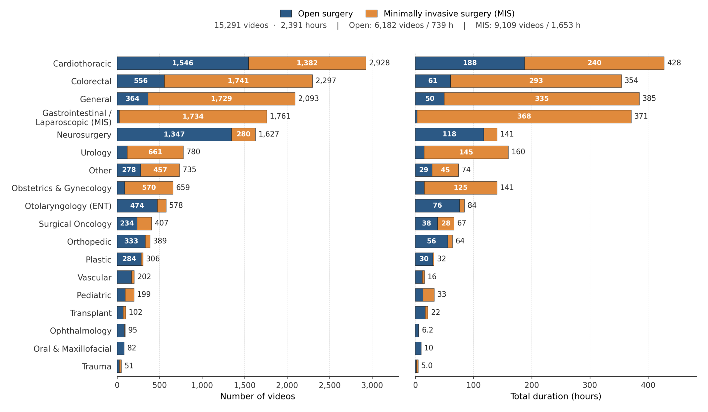
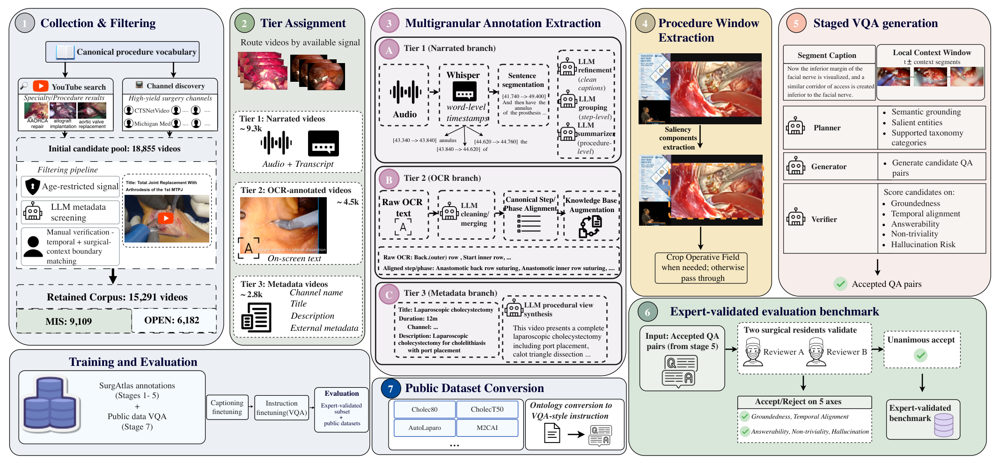
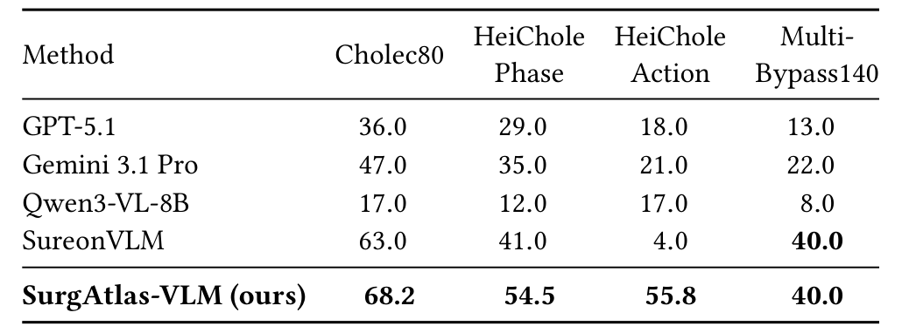

图文解读
1背景与动机
手术视觉-语言模型缺的是原生的、带语言的手术视频。 已有的大规模系统多数靠把公开数据集的阶段、器械标签改写成对话，标签来自封闭词表，说不出一个动作为什么做。
另一条路线从讲解视频的旁白里提取监督，但公开视频池只有两三千个，而且讲解者只讲教学要点，常规步骤很少说。
开放手术几乎缺席。 现有公开资源基本是腔镜或机器人画面；开放手术的 AVOS 只有 47 小时带标注，EgoSurgery 只有 20 个视频，都没有语言监督。
2核心观点速览
论文的答案是 SurgAtlas：从 YouTube 检索和高产频道收集 18,855 个候选，筛出 15,291 个视频、2,391 小时，开放 6,182 个、微创 9,109 个。
每个视频按可用信号分档：有旁白的转写成字幕、步骤和摘要；有屏幕文字的规范成步骤描述；都没有的只用标题生成摘要。再从字幕生成 400K 条推理问答，并由两名住院医师审出一个 2,890 对的评测子集。
最有信息量的结果是跨术式消融。 只用微创训练的模型在开放分区上只有 29.1，在第一人称开放手术 EgoSurgery 上只有 24.8，比未微调的底座还低。
边界同样清楚： 字幕和摘要没有人工准确率，评测用大模型判分且问题与训练集同源，标准基准的领先没有排除公开转换数据的贡献。
3视频从哪里来
收集分两条线：按标准术式词表检索，标题与术式按词元集合的杰卡德相似度匹配；以及挖掘大学外科、学会等高产频道。
筛选有一个巧妙的信号：YouTube 会把真实术中画面标为年龄限制，作者把它当作正向信号。 之后用大模型读标题和描述排除纯讲座，最后由 17 名标注者人工核验并标出手术起止时间。

专科分布很不均衡：心胸、结直肠、普外、胃肠、神经外科五个专科占约 70%，眼科只有 95 个视频。三个过滤各剔除了多少视频，论文未说明。
4四层标注怎样做出来
核心思路是按信号分档，而不是把所有视频套进一个模板。
| 档 | 条件 | 视频数 | 产出 |
|---|---|---|---|
| Tier 1 | 有旁白 | 约 9,360 | 字幕、步骤、摘要、问答 |
| Tier 2 | 有屏幕文字 | 约 4,460 | 步骤/阶段描述 |
| Tier 3 | 仅元数据 | 约 2,778 | 摘要 |
旁白分支丢弃 Whisper 的原生分段，按词级时间戳重组完整句子，再由大模型精修、分组、摘要。屏幕文字分支先清洗、合并，再和大模型生成的标准步骤表对齐；对不上就保留原短语，这种回退占了 64.9%。

问答由规划器、生成器、校验器三个大模型依次产生，校验器在依据性、时间对齐、可回答性、非平凡性、幻觉风险五维打分，拒绝 7%。各步所用的模型和阈值，论文未说明。
5训练与评测协议
验证模型 SurgAtlas-VLM 基于 Qwen3-VL-8B：先三步字幕预训练，逐步解冻投影层、语言模型和视觉编码器；再用 SurgAtlas 问答加 18 个公开数据集的转换问答做指令微调。
评测分三类：已有手术基准（阶段、动作、三元组、关键安全视野），基线数字引自原论文；专家子集和自动测试集，用大模型判分；跨术式消融，加 EgoSurgery 零样本。
判分模型与提示，以及 SurgAtlas-VLM 推理时的帧数，论文都未说明。
6结果说了什么
已有基准上，宏 F1 在 Cholec80 阶段为 68.2（SureonVLM 63.0），HeiChole 阶段 54.5（41.0），MultiBypass140 持平 40.0。

专家子集上，总体微创 42.9、开放 39.3，比最强通用模型高 2.5 和 1.7 个点，比未微调底座高约 19 个点。但操作推理落后 GPT-5 系列约 10 个点，微创分区的操作理由细类差距超过 20 个点。
| 模型 | 专家微创 | 专家开放 | EgoSurgery |
|---|---|---|---|
| Qwen3-VL-8B | 24.0 | 19.9 | 43.8 |
| GPT-5.1 | 40.4 | 37.0 | 55.9 |
| 仅微创 | 40.1 | 29.1 | 24.8 |
| 仅开放 | 32.2 | 38.9 | 62.5 |
| 合并 | 42.5 | 39.0 | 56.1 |
单一术式训练在另一术式上掉约 10 个点，仅开放模型在第一人称手术室画面上最好。 这说明开放手术的视角、光照和人员信息可以迁移，腔镜画面不行。
7结果没说什么
- 领先未必是能力。 专家子集的问题和训练集出自同一条生成管线，措辞和选项风格一致，判分也是大模型。格式适应与能力提升在论文里没有被分离。
- 标准基准的领先未必来自新语料。 这些基准的训练集已转换进指令数据，论文没有去掉它们的消融。
- 质量只有部分证据。 97.6% 是对已通过自动校验的 2,960 对的人工通过率；300K 字幕、81K 步骤、12.2K 摘要的准确率论文未说明。
- 跨术式结论没有对齐规模。 开放 739 小时、微创 1,653 小时，消融未控制数据量。
8相对已有路线新在哪里
| 路线 | 代表 | 短板 | SurgAtlas 的差异 |
|---|---|---|---|
| 旁白中心 | SurgLaVi、SUREON | 依赖讲解视频 | 加入屏幕文字与元数据两档 |
| 标签改写 | SurgVLM、SurgΣ | 封闭词表，独立视频少 | 规模来自原生收集 |
| 纯视觉 | LEMON | 无语言 | 带四层语言标注 |
| 开放手术 | AVOS、EgoSurgery | 无语言，规模小 | 6,182 个开放视频与分区评测 |
最独特的是开放手术部分和对应的分区评测。
9复现要注意什么
- 视频来自 YouTube，可能下架；发布内容是视频还是链接、许可如何，论文未说明。
- 阈值和各步大模型选型没有公开，管线本身难以独立复现。
- 正文与表 4 中底座在 EgoSurgery 上的分数不一致（47.8 对 43.8）。
- 用它评测时，应分开报告开放与微创，并补一个非同源的问答集。